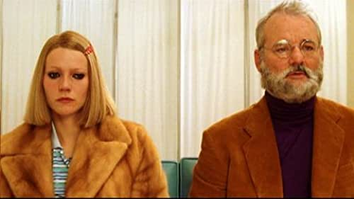

The Royal Tenenbaums

A surprisingly sweet family story of love, redemption and coming back to one's roots to remedy the damages caused in the past. Fans will be delighted by the quirkiness of the family and also the signature retro images here and there. Here is a homage to the sixties done in true Anderson style, full of whimsy and tenderness.
The music that ranges from delicate covers of Beatles songs and even the Peanuts Christmas song is a triumphant love letter to the era that fit in perfectly with every scene.
Durata: 1h 50m; Genere: Comedy, Drama; Anno di uscita: 2001; Regista: Wes Anderson